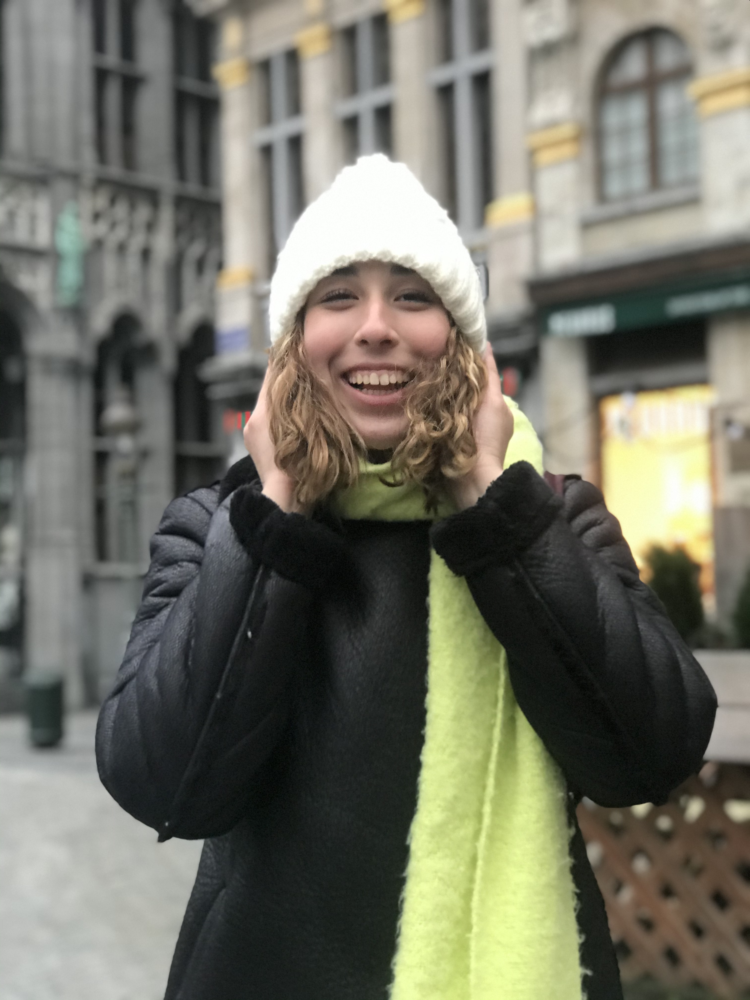

Bem-Vindo! Antes demais o meu nome é Carolina Cassamá, tenho 22 anos e sou aluna universitária da Escola Superior de Educação de Lisboa, do curso de Artes Visuais e Tecnologias. Sempre fui muito curiosa e garantidamente que uma das coisas que mais ambiciono é sem dúvida alguma,a independência.
Sendo que surgiu a oportunidade de realizar Erasmus através da ESELx, candidatei-me ao programa e fiquei entusiasmada relativamente ao facto de ir viajar e viver durnate 6 meses fora de casa.
Sendo que elegi como destino, a Bélgica.

Uma Nova Casa
Um sítio novo, para criar memórias. Quase que acaba por ser a nossa primeira casa e inevitavelmente o valor sentimental fica instaurado.
Memórias
Um registo de algumas das memórias que foram vividas e criadas ao longo destes 6 meses, num país totalmentte desconhecido.
Pessoas
O fator que irá potencializar a tua viagem, a tua experiencia, a tua aventura vão ser as pessoas! Agarra bem com as duas maõs e desfruta ao máximo das pessoas que tens ao teu alcance, enquanto estás fora.